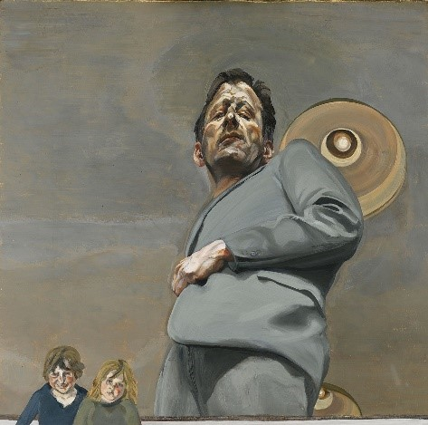
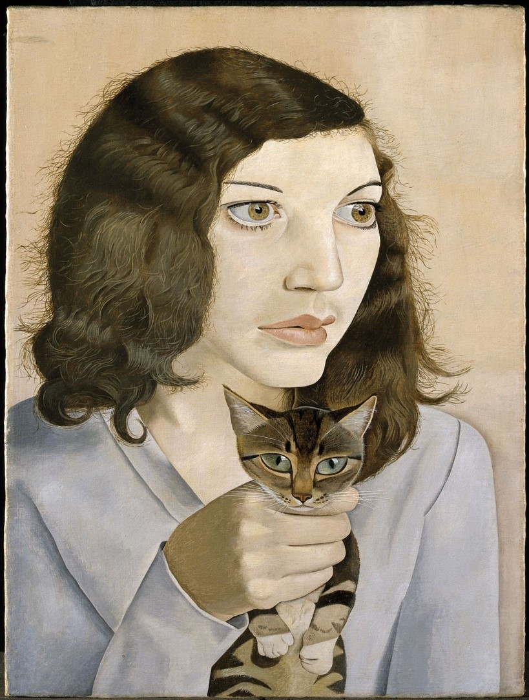

Among a slew of shows celebrating 100 years since the artist’s birth, the National Gallery exhibition explores his enduring appeal as a new generation embrace figuration
How much is too much? That is the question facing the National Gallery as it launches its blockbuster Lucian Freud (1922-2011) exhibition, timed to coincide with the centenary of the painter’s birth. Freud, undeniably, is everywhere; over the past two decades, there have been almost a dozen shows of his work in London alone, including major surveys at the National Portrait Gallery in 2012 and the Royal Academy of Arts in 2019. Last year, Freud was on show at Tate Liverpool, while several smaller exhibitions will run concurrently with the National Gallery’s.
The National Gallery’s Daniel F. Herrmann, who has curated Lucian Freud: New Perspectives, suggests that the gallery is able to move the dial. “His popularity speaks to the quality of his work—people like to see it and there’s a lot to see. But I also feel that a lot of exhibitions show ways of thinking about Freud that have been done before. Now is a great time to reconsider Freud. That is what we are trying to do and what, frankly, we are fortunate we can do as an institution.”
Herrmann’s approach is essentially to reposition a major figure. “Younger artists are interested in his work right now,” he says. “There is a real resurgence in figuration, what it does, how it conveys messages, what it can do. All of these questions intersect with Freud.”
So, what is this new thinking? Herrmann says he admires “how committed Freud is to the practice of painting”, which “comes with a certain amount of radicality”. He continues: “The work requires and rewards radical looking. You learn a lot when you try to figure out how each painting operates.” Freud’s commitment to flesh and nakedness is a key part of it. “It is about truth. Not through simple verisimilitude, photorealism as it were, but veracity—what is the truth of a person? Freud makes the analogy: life is paint, flesh is paint, paint is flesh.”
To back up his contention of figuration’s new relevance, Herrmann has enlisted Tracey Emin, Jutta Koether and Chantal Joffe to contribute to the catalogue; all speak of the rawness and intimacy Freud achieved. Herrmann suggests that there has been a sea change in the way Freud’s more spectacular pictures—portraits of Leigh Bowery and Sue Tilley (the “benefits supervisor”)—are viewed. “Ten or 20 years ago, Freud was often called a painter with an ‘unflinching eye’, or a ‘cruel gaze’.